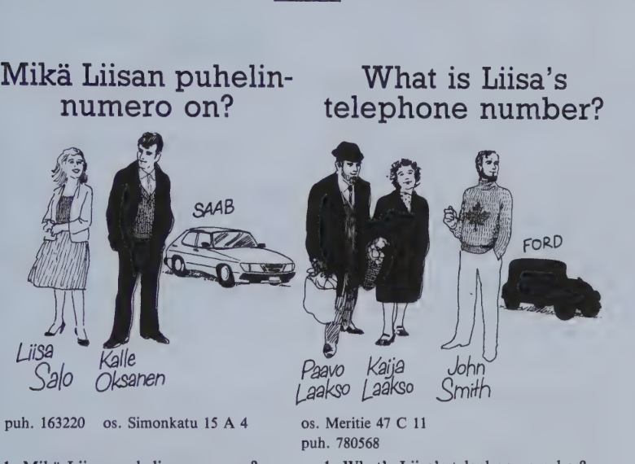
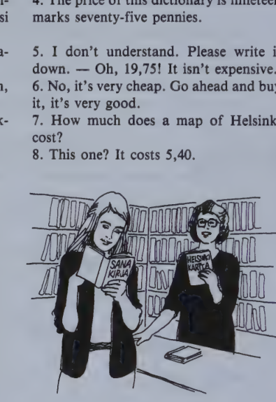

Kappale 6 / Lesson 6#
Mikä Liisan puhelinnumero on? / What is Liisa’s telephone number?#

Suomi |
English |
|---|---|
Liisa Salo |
Liisa Salo |
puh. 163220 |
tel. 163220 |
os. Simonkatu 15 A 4 |
addr. Simonkatu 15 A 4 |
Kalle Oksanen |
Kalle Oksanen |
SAAB |
SAAB |
Paavo Laakso |
Paavo Laakso |
Kaija Laakso |
Kaija Laakso |
os. Meritie 47 C 11 |
addr. Meritie 47 C 11 |
puh. 780568 |
tel. 780568 |
John Smith |
John Smith |
FORD |
FORD |
Suomi |
English |
|---|---|
1. Mikä Liisan puhelinnumero on? Liisan numero on __________. |
1. What’s Liisa’s telephone number? Liisa’s number is __________. |
2. Mikä Kallen osoite on? __________ |
2. What’s Kalle’s address? __________ |
3. Mikä on Paavon sukunimi? __________ |
3. What’s Paavo’s family name? __________ |
4. Mikä on rouva Laakson etunimi? __________ |
4. What’s Mrs. Laakso’s first name? __________ |
5. Mikä on herra John Smithin kotimaa? __________ |
5. What’s Mr. John Smith’s home country? __________ |
6. Mikä John Smithin auto on? __________ |
6. What is John Smith’s car? __________ |
7. Sano mikä on Suomen pääkaupunki! __________ |
7. Tell me what is Finland’s capital! __________ |
8. Entä Englannin? __________ |
8. And England’s? __________ |
9. Onko Liisa tytön vai pojan nimi? __________ |
9. Is Liisa a girl’s or a boy’s name? __________ |
10. Onko Tapio miehen vai naisen nimi? En tiedä. Se on miehen nimi. |
10. Is Tapio a man’s or a woman’s name? I don’t know. It’s a man’s name. |
11. Kenen auto on Saab? Kalle Oksasen. |
11. Whose car is a Saab? Kalle Oksanen’s. |
12. Kenen puhelinnumero on 780568? Laakson perheen. |
12. Whose telephone number is 780568? It’s the number of the Laakso family. |
13. Tiedätkö kenen romaani on Seitsemän veljestä? Aleksis Kiven. |
13. Do you know whose novel is “The Seven Brothers”? It’s a novel by Aleksis Kivi. |
14. Tiedätkö kenen sävellys on Finlandia? Se on Sibeliuksen sävellys. |
14. Do you know whose composition is “Finlandia”? It is a composition by Sibelius. |
Tämän miehen auto on Saab.
Sairaan tytön nimi on Anna.
tai/vai?
“you” on suomeksi sinä tai te.
Onko “hyvin” englanniksi good vai well?
Kielioppia / Structural notes#
1. Genitive singular#
Finnish |
English |
|---|---|
Kalle/n auto |
Kalle’s car |
tyttö/n osoite |
the girl’s address, the address of the girl |
Englanni/n pääkaupunki |
the capital of England |
The ending of the genitive sing. in Finnish is -n.
The word in the genitive (except in poetry) invariably precedes the thing possessed. (In English the prepositional construction with of comes after it.)
The stem to which the genitive ending is added may differ from the basic form. As the genitive stem is widely used in the inflection of nouns, it will be listed in the vocabularies from now on and should be memorized along with the basic form.
When added to foreign names ending in a consonant, the gen. ending (and other endings as well) is preceded by a “link vowel” -i-:
Finnish |
English |
|---|---|
Jamesi/n puhelinnumero |
James’s telephone number |
New Yorki/n poliisi |
the New York police |
The title remains uninflected when followed by a name:
Finnish |
English |
|---|---|
herra/n osoite |
the gentleman’s address |
herra Matti Suomela/n koti |
Mr. Matti Suomela’s home |
An adjective or a pronoun preceding an inflected noun agrees with it, that is, has the same ending:
Finnish |
English |
|---|---|
tuo/n karta/n hinta |
the price of that map |
vanha/n miehe/n poika |
the old man’s son |
suomalaise/n naise/n nimi |
the name of the Finnish woman |
Note 1. Many pronouns have more or less irregular genitive forms. You already know (minä) minun, (sinä) sinun, (te) teidän. Note also:
hän hänen kuka? kenen? mikä? minkä?
Note 2. If the word has a poss. suffix, the gen. sing. and the basic form are identical:
Finnish |
English |
|---|---|
(Minun) poikani on pieni. |
My son is small. |
(Minun) poikani nimi on Eero. |
My son’s name is Eero. |
Note 3. The explanations given in this note are meant for those students who, instead of memorizing the words individually from vocabularies, prefer a more systematic approach.
The gen. stem may differ from the basic form for two reasons:
a) Words with k, p, or t undergo changes which will be explained in detail in 23:3. Examples: kauppa, gen. kaupan; koti, gen. kodin.
b) On the basis of how the words end, there are a number of inflectional types which the student will learn to recognize by and by. Examples: Suomi, gen. Suomen; suomalainen, gen. suomalaisen.
The gen. stem will differ from the basic form
always if the word ends in a consonant, e.g. Sibelius, gen. Sibeliuksen; puhelin, gen. puhelimen
with just a couple of exceptions if the word ends in -e, e.g. huone, gen. huoneen
fairly often if a 2-syllable word ends in -i, e.g. Suomi, gen. Suomen; kieli, gen. kielen
The list below will help illustrate the rules given here.
A list of the nouns in lessons 1-6 with their gen. sing. forms#
+ shows that the word is subject to k p t changes.
Word |
Genitive |
Lesson |
|---|---|---|
auto |
auto-n |
1 |
bussi |
bussi-n |
1 |
Englanti |
Englannin |
3 |
herra |
herra-n |
4 |
huono |
huono-n |
2 |
iso |
iso-n |
2 |
kahvi |
kahvi-n |
5 |
kartta |
kartan |
3 |
katu |
kadun |
1 |
kauppa |
kaupan |
1 |
kaupunki |
kaupungin |
6 |
keski/viikko |
viikon |
3 |
koti |
kodin |
5 |
kurssi |
kurssi-n |
5 |
kuva |
kuva-n |
1 |
lauantai |
lauantai-n |
5 |
maa |
maa-n |
3 |
maanantai |
maanantai-n |
1 |
musiikki |
musiikin |
5 |
nolla |
nolla-n |
5 |
numero |
numero-n |
1 |
opettaja |
opettaja-n |
5 |
opiskelija |
opiskelija-n |
5 |
pallo |
pallo-n |
6 |
perjantai |
perjantai-n |
5 |
poika |
pojan |
1 |
päivä |
päivä-n |
1 |
radio |
radio-n |
1 |
Ranska |
Ranska-n |
3 |
romaani |
romaani-n |
6 |
rouva |
rouva-n |
4 |
Ruotsi |
Ruotsi-n |
4 |
sivu |
sivu-n |
1 |
suku |
suvun |
5 |
sunnuntai |
sunnuntai-n |
5 |
talo |
talo-n |
1 |
televisio |
televisio-n |
1 |
tie |
tie-n |
6 |
tiistai |
tiistai-n |
2 |
tohtori |
tohtori-n |
4 |
torstai |
torstai-n |
4 |
tyttö |
tytön |
1 |
vanha |
vanha-n |
2 |
vasta/kohta |
kohdan |
6 |
Venäjä |
Venäjä-n |
4 |
More genitive stems from lessons 1-6#
Word |
Genitive |
Lesson |
|---|---|---|
kaikki |
kaiken |
4 |
kieli |
kielen |
3 |
kivi |
kiven |
1 |
nimi |
nimen |
5 |
nuori |
nuoren |
2 |
pieni |
pienen |
2 |
Suomi |
Suomen |
1 |
uusi |
uuden |
2 |
nainen |
naisen |
1 |
puhelin |
puhelimen |
5 |
mies |
miehen |
1 |
kiitos |
kiitoksen |
3 |
kysymys |
kysymyksen |
2 |
Sibelius |
Sibeliuksen |
1 |
sävellys |
sävellyksen |
6 |
vastaus |
vastauksen |
2 |
sairas |
sairaan |
2 |
kaunis |
kauniin |
2 |
huone |
huoneen |
1 |
kappale |
kappaleen |
1 |
osoite |
osoitteen |
5 |
perhe |
perheen |
6 |
nukke |
nuken |
6 |
Pronouns#
Pronoun |
Genitive |
Lesson |
|---|---|---|
minä |
minun |
3 |
sinä |
sinun |
3 |
hän |
hänen |
2 |
te |
teidän |
4 |
tämä |
tämä-n |
1 |
tuo |
tuo-n |
1 |
se |
se-n |
1 |
mikä |
minkä |
1 |
kuka |
kenen |
1 |
Sanasto / Vocabulary#
Finnish |
English |
|---|---|
kaupunki kaupungin |
city, town |
kenen? (from kuka?) |
whose? |
perhe perheen |
family |
pää/kaupunki -kaupungin |
capital (city) |
romaani-n |
novel |
sävellys sävellyksen |
composition |
tie-n |
road, way |
tietää (tiedän tiedät tiedätte) |
to know (facts) |
vai? (cp. tai) |
or (in questions) |
* New words in structural notes, reader, exercises etc.
Finnish |
English |
|---|---|
englanniksi |
in English |
nukke nuken |
doll |
pallo-n |
ball |
suomeksi |
in Finnish |
vasta/kohta-kohdan |
opposite, contrast |
Kappale 7 / Lesson 7#
Paljonko sanakirja maksaa? / How much does the dictionary cost?#
Kirjakaupassa / In the bookstore#
Suomi |
English |
|---|---|
1. Paljonko tämä sanakirja maksaa? |
1. How much does this dictionary cost? |
2. Se maksaa 19,75. |
2. It costs 19,75. |
3. Anteeksi, kuinka? Olkaa hyvä ja puhukaa hitaasti. |
3. Pardon? Please speak slowly. |
4. Tämän sanakirjan hinta on yhdeksäntoista markkaa seitsemänkymmentä viisi penniä. |
4. The price of this dictionary is nineteen marks seventy-five pennies. |
5. En ymmärrä. Olkaa hyvä ja kirjoittakaa se. - Ai, 19,75! Se ei ole kallis. |
5. I don’t understand. Please write it down. - Oh, 19,75! It isn’t expensive. |
6. Ei, se on hyvin halpa. Ostakaa se vain, se on oikein hyvä. |
6. No, it’s very cheap. Go ahead and buy it, it’s very good. |
7. Kuinka paljon Helsingin kartta maksaa? |
7. How much does a map of Helsinki cost? |
8. Tämäkö? Sen hinta on 5,40. |
8. This one? It costs 5,40. |

Kenen sanakirja tuo on?
Onko se sinun?
Ei ole, se on Liisan tai Eevan.
Minkä hinta on 19,75? Sanakirjan.
Pekka, ole hyvä ja puhu hitaasti!
Professori Joki, olkaa hyvä ja puhukaa hitaasti!
n-nn nimeni - nimenne, taloni - talonne, kotini - kotinne
r kartta, markka, herra Oran kirja, kirjoittakaa numero!
h hetkinen! herra Hietanen, puhukaa hitaasti!
halpa hinta, hyvin huono, herra puhuu hollantia
Kielioppia / Structural notes#
1. Basic form of verbs#
The basic form (dictionary form, infinitive) of Finnish verbs always ends in -a (-ä).
Finnish |
English |
|---|---|
Haluan puhu/a ja ymmärtä/ä suomea. |
I want to speak and understand Finnish. |
Haluatko tul/la kurssille? |
Do you want to come to the course? |
The ending of the infinitive is
-a (-ä) if the inf. ends in two vowels: puhu/a, ymmärtä/ä, sano/a, otta/a, maksa/a
the preceding consonant plus -a (-ä) if the inf. ends in one vowel: ol/la, tul/la, men/ndä to go, halu/ta
More about the basic form of verbs in 27:1.
2. Imperative plural (affirmative)#
Finnish |
English |
|---|---|
Puhu/kaa suomea, Bill ja Mary! |
Speak Finnish, Bill and Mary! |
Olkaa hyvä ja istu/kaa, rouva Oksanen! |
Please sit down, Mrs. Oksanen! |
Imperative pl. is used when speaking to many people or, formally, to one person whom you address with his title, family name, and te. It is formed by dropping the inf. ending and adding -kaa (-kää) to the stem:
Finnish |
English |
|---|---|
puhu/a |
to speak |
puhu/kaa! |
speak! |
ol/la |
to be |
ol/kaa hyvä ja |
please (lit. “be good and”) |
istu/a |
to sit |
istu/kaa! |
sit down! |
More about the imperative pl. in 30:1.
(The imperative sing. was explained in 5:2.)
3. Adverbs from adjectives#
Finnish |
English |
|---|---|
millainen? |
how? |
huono bad |
Puhun huono/sti ranskaa. |
kaunis beautiful (gen. kaunii/n) |
Tanssi kaunii/sti. |
hidas slow (gen. hitaa/n) |
Puhukaa hitaa/sti! |
Example |
English |
|---|---|
Puhun huono/sti ranskaa. |
I speak French badly. |
Tanssi kaunii/sti. |
You dance beautifully. |
Puhukaa hitaa/sti! |
Speak slowly! |
Adverbs of manner are formed from adjectives by means of the suffix -sti (cp. -ly in English). The suffix is added to the genitive stem whenever it differs from the basic form.
Sanasto / Vocabulary#
Finnish |
English |
|---|---|
ai |
oh, ah, ouch |
halpa halvan |
cheap, inexpensive |
hinta hinnan |
price |
hitaasti (from hidas hitaan) |
slowly |
kallis kalliin |
expensive, dear |
kirja-n |
book |
maksa/a (maksa/n-t-tte) |
to pay, cost |
markka markan |
mark |
olkaa hyvä! |
please; here you are; help yourself (to many people or, formally, to one person) |
osta/a (osta/n-t-tte) |
to buy, purchase |
paljon |
much, a lot, lots of, a great deal |
paljonko? = kuinka paljon? |
how much? |
penni-n |
penny (one 100th of a mark) |
sana-n |
word |
sana/kirja-n |
dictionary (lit. “word-book”) |
ymmärtä/ä (ymmärrä/n-t-tte) |
to understand |
en ymmärrä |
I don’t understand |
* New words in structural notes, reader, exercises etc.
Finnish |
English |
|---|---|
halu/ta (halua/n-t-tte) |
to want, wish, desire |
kuppi kupin |
cup |
lasi-n |
glass |
laula/a (laula/n-t-tte) |
to sing |
men/nä (mene/n-t-tte) |
to go |
nopea-n (# hidas) |
fast, quick, rapid |
tee-n |
tea |
Numerals#
Finnish |
Number |
|---|---|
yksi (yhden) |
1 |
kaksi (kahden) |
2 |
kolme (-n) |
3 |
neljä (-n) |
4 |
viisi (viiden) |
5 |
kuusi (kuuden) |
6 |
seitsemän (seitsemän) |
7 |
kahdeksan (kahdeksan) |
8 |
yhdeksän (yhdeksän) |
9 |
kymmenen (kymmenen) |
10 |
yksi/toista (yhden/toista) |
11 |
kaksi/toista |
12 |
kolme/toista |
13 |
kaksi/kymmentä (kahden/kymmenen) |
20 |
kaksi/kymmentä/yksi |
21 |
sata (sadan) |
100 |
sata/kymmenen |
110 |
viisi/sataa |
500 |
tuhat (tuhannen) |
1000 |
neljä/tuhatta |
4000 |
miljoona (-n) |
1 000 000 |
In colloquial Finnish many numerals have short quick-speech forms: yks, kaks, viis, kuus, kaks/kyt/yks, kol/kyt/viis etc.